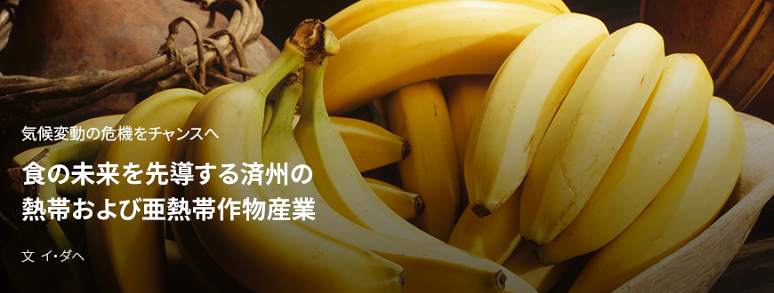
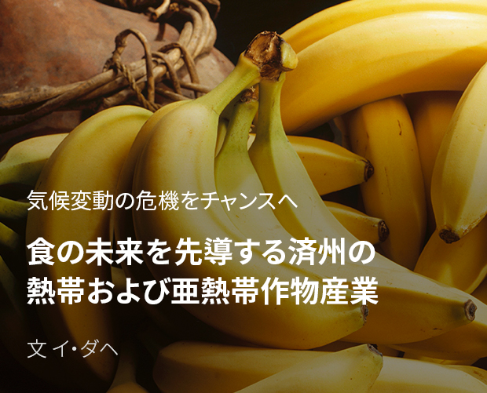
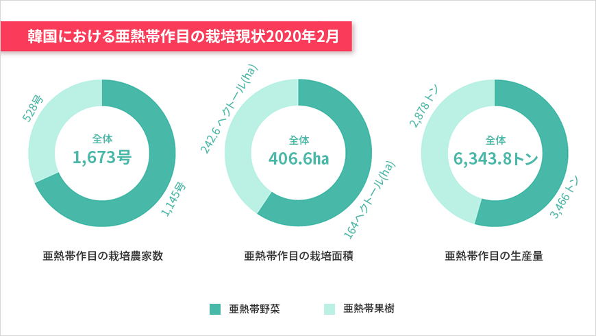
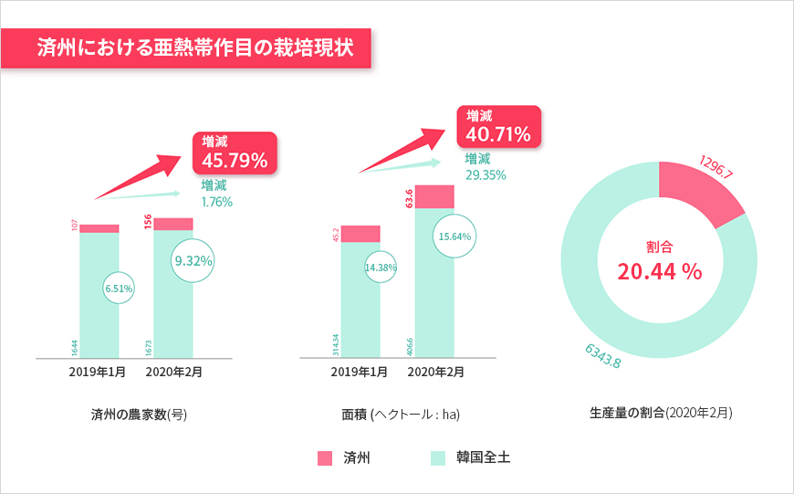
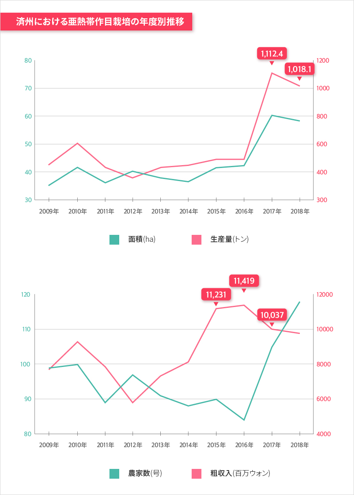
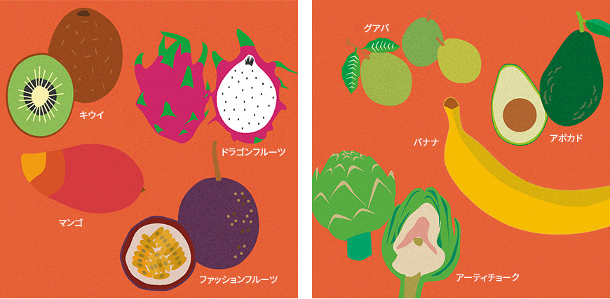
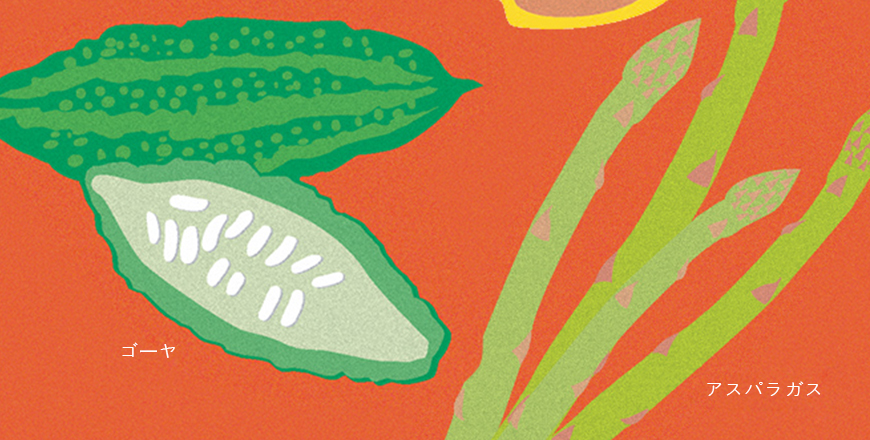
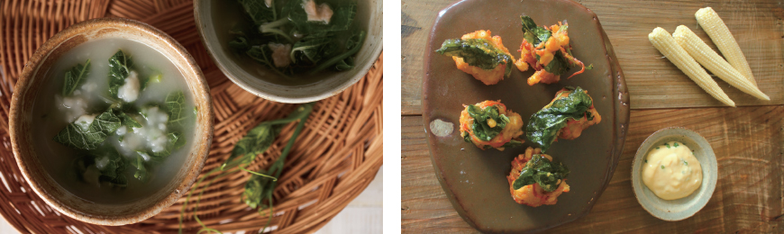

기획취재콘텐츠
- Home
- 제주라이프
- 기획취재콘텐츠
食の未来を先導する済州の熱帯および亜熱帯作物産業새로운 글



済州の日差しを受けてよく熟したオリーブが露地で育つオリーブの木にぶら下がっている。2メートルを超えるバナナの木にはバナナがふさふさとなっていて、リンゴのように赤いアップルマンゴとヒョウタンに似ているパパイヤが収穫を待っている。東南アジアや地中海の農場のように見えるが、オリーブやバナナ、アップルマンゴとパパイヤは今済州で活発に栽培される亜熱帯作物。
- 済州の亜熱帯フルーツ農場「ユジンファング」ではパパイヤやバナナなど色んなな
亜熱帯作物が育っている。 ⓒユン・ソジン -
亜熱帯作物が育っている。 ⓒユン・ソジン -
気候変動により変化する農作物地図
気候変動に関する政府間パネル(IPCC)第5次評価報告書によると、済州道の年平均気温はこの80年間で約1.6℃上昇し、今でもだんだん上がっている。農村振興庁は、韓国の耕地面積において2060年に亜熱帯地域が6.6%、2080年には62.3%まで増えて韓半島のほとんどが亜熱帯気候に変わると見込んでいる。済州はすでに亜熱帯の北方限界と分類されていて、急激な温暖化により白菜、大根などの冬越し作物の栽培地が北上し、そこは亜熱帯作物に入れ替わるとみられる。済州を代表する作物であるみかんの生産地は韓半島本土の南部地方から、2019年には京畿道まで北上した。済州はマンゴ、バナナ、パパイヤなど代表的な熱帯および亜熱帯作物の原産地としてその位置づけを広げつつある。温帯性気候から亜熱帯気候への変化により韓国の農産物地図は塗り替えている。


韓国における亜熱帯作目の栽培現状(2020年2月)
-
亜熱帯作目の栽培農家数 全体 1,673号
- 亜熱帯野菜 1,145号
- 亜熱帯果樹 528号
-
亜熱帯作目の栽培面積 全体 406.6 ヘクトール(ha)
- 亜熱帯野菜 164 ヘクトール(ha)
- 亜熱帯果樹 242.6 ヘクトール(ha)
-
亜熱帯作目の生産量 全体 6,343.8トン
- 亜熱帯野菜 3,466トン
- 亜熱帯果樹 2,878トン

※ 出展 : 農村振興庁亜熱帯作目栽培現状(2020.02)
2020年2月現在、韓国における亜熱帯作目の栽培農家は1,673号で、栽培面積は406.6ヘクトール(ha)、生産量は6,343.8トンで、そのうち亜熱帯野菜の栽培農家は1,145号、栽培面積は242.6ヘクトール(ha)、生産量は3466トンで、亜熱帯果樹の栽培農家は528号、栽培面積は164ヘクトール(ha)、生産量は2,878トンである。亜熱帯野菜の栽培面積はゴーヤ、ウコン、根ニラの順で、果樹はマンゴ、ファッションフルーツ、バナナの順。亜熱帯作目のうちマンゴ、パパイヤ、ドラゴンフルーツ、オリーブの栽培面積はこの3年間着実に拡大している。
済州は2020年2月現在、156の農家で63.6ヘクトール(ha)に亜熱帯果樹を栽培し、全体生産量の20%以上に当たる1,296.7トンを生産した。2019年1月と比べると韓国全土における亜熱帯作物の栽培農家号数が1.76%増加したのに対して、済州は107農家から156農家へと45%以上増え、栽培面積も45.2ヘクトール(ha)から63.6ヘクトール(ha)に40%以上拡大した。全国の熱帯および亜熱帯作物の栽培農家および面積からすると、済州の増加傾向は著しいものとみられる。


※ 出展 : 農村振興庁亜熱帯作目栽培現状(2020.02、2019.01)
済州を代表する熱帯および亜熱帯作物
済州は2008年から熱帯および亜熱帯作物のマンゴを中心に、ドラゴンフルーツ・グアバ・アテモヤ・アボカド・ファッションフルーツなど果物類の栽培をスタートした。また、アスパラガス・ブロッコリー・コールラビ・アーティチョーク・ビート・メキャベツ・ゴーヤといった亜熱帯野菜の適応性検討および栽培技術開発を実施し、一部作物は今でも栽培している。2014年にはオリーブの露地栽培に成功して農家への普及が始まった。済州産アップルマンゴとバナナは、以前経験した熱帯および亜熱帯作物の栽培ノウハウに基づいて済州産ブランドを構築してマーケットで成果を挙げている。
2018年の一年間、済州の118農家は58haの栽培面積から計1018トンの亜熱帯作物を生産し、97億8800万ウォンの粗収入をあげた。10年前の2009年に比べて栽培面積や農家号数が増えたわけではないが、生産量と粗収入では確実な成長を表している。熱帯および亜熱帯作物の栽培テスト段階で栽培技術の発展および農家における栽培能力を拡大し安定的に産業エリアへと根付いている。現在、済州では主にバナナ、ファッションフルーツをメイン品目にして多品種少量生産の形で亜熱帯果樹の栽培が行われている。具体的に統計されてはいないが、ゴーヤとウコン、オクラ、根ニラ、パクチー、ヨウサイといった亜熱帯野菜も済州のあちこちで栽培している。


亜熱帯果樹としては、2018年基準でアップルマンゴが栽培面積と生産量、粗収入において一番の成果を収めた。代表的な熱帯果物の一つであるマンゴは、やわらかい果肉に甘い味で世界の人々に愛されている。済州で栽培されるマンゴは赤みを帯びるアップルマンゴで、香りが濃く果肉がやわらかい。マンゴは完熟型の果物で、収穫してからは商品としての維持期間が10日ほどと短い。輸入マンゴの場合、完熟してからだと流通段階で商品価値が落ちてしまうので未熟の際に収穫して高温燻蒸や薬剤処理をして国内で流通されるため、韓国内で完熟果として収穫したマンゴとは味や香りで違いが出るのは当たり前のこと。コ・スンチャン済州農業技術院研究員によると、品質調査においても輸入産は糖度が12ブリックス以下で低いのに対し済州産アップルマンゴは15ブリックス以上で味と香りが濃い。とくにマンゴは高経済作物で、ハウスみかんより所得が1.5倍も高く産業競争力も十分。高い糖度とやわらかい果肉のマンゴはフルーツパンチやかき氷、ヨーグルトなどのデザートでよく使われる。済州新羅ホテルは2008年から現在まで毎年夏のシグネチャーメニューとして済州産アップルマンゴのかき氷を提供しているが、5万ウォンを超える価格にも新鮮な済州産アップルマンゴで作った品の高い味と香りのため、その需要が増えている。

- イラスト：レリッシュ -
済州農業技術院による亜熱帯果樹調査には含まれていないが、亜熱帯作目に該当するチャムダレ（キウイ）は、済州で栽培される亜熱帯作物の中でも一番の生産量を誇る。2018年のその他果樹粗収入現状資料によると、521の農家が計8300トン以上を生産して約300億ウォンの粗収入をあげた。土産キウイ種のチャムダレからゴールドキウイ、レッドキウイなど品種開発により多様なキウイが済州で生産され、2017年には香港・マレーシア・シンガポール・日本の４ヵ国に80トン、2018年には前年比2倍増の160トンが輸出され優秀輸出品目として挙げられる。ニュージーランドのキウイ生産農家が集まって発足したプレミアムキウイブランドの「ゼスプリ」は、2004年に西帰浦市と生産協約を締結して2007年1月に済州ゴールドキウイを初めて流通して以来、共同発展の協力を続けている。2015年、農村振興庁では韓国型キウイ品種の「ジェシーゴールド」「漢拏ゴールド」などの土産キウイ種を開発して栽培農家に普及、外国種子であるため外国にローヤルティを支払っていた方式から抜け出すと共に農家の生産性向上にも努めている。
バナナは、済州で1980年代から栽培してきたが輸入自由化により競争力が落ちたため一時は消えて、2016年以降再び栽培農家が増加した作目。バナナ農家の数は2016年に3号、2017年に17号、2018年に28号へと徐々に増えてきた。粗収入も2016年の1億7100万ウォンから2018年には23億4500万ウォンへと13倍以上増加した。韓国産バナナは輸入バナナより高額だが、安全な国内の食べ物を好む消費者に人気が高く、期待作目として浮上している。

- イラスト：レリッシュ -
「苦いキュウリ」と呼ばれるつる性野菜のゴーヤは、豊かなビタミンCとミネラルを含んでいるため糖尿と肥満の予防、高血圧の改善などに有効で、健康機能性の作物として人気が高い。韓国全土におけるゴーヤ栽培面積は107.92haと韓国で栽培される亜熱帯作物のうち一番広い。ゴーヤは健康機能性をもちアジアンフードにも多様に利用される材料で、活用度が高いため6次産業と連携した経済作物としての期待が高まっている。
済州は亜熱帯作物産業化の最適地
このように韓国の最南端に位置している済州は、気候変動の危機に速やかに対応して亜熱帯作物の品種開発および生産、普及を先導している。済州は亜熱帯作物の産地として最適の条件を揃えた。韓国最南端地域で平均気温が高いため亜熱帯作物の栽培時にも加温栽培コストが他地域より低く、一部の作物は加温なしにも栽培できる。また、恵まれた自然環境からのブランド価値と多様な生物種に基づいて、化粧品原料および機能性食品産業などバイオ産業のメッカとして浮上している産業的背景は亜熱帯作物の産業化に有効に働く。
済州吾羅洞所在の農村振興庁温暖化対応研究所は国立園芸特作科学院の所属機関で、2008年に温暖化対応農業研究センターとして発足した。2015年には温暖化対応農業研究所に改編、済州特別自治道農業技術院と共に熱帯および亜熱帯作物の品種、栽培技術の研究、実証および普及など気候変動に着実に対応しながら作物競争力の確保に向けて多様な取り組みを展開している。
農村振興庁は食の未来を開発するため2008年から亜熱帯作物の研究をスタート、合計50種類の亜熱帯作物を韓国に導入してきた。2017年にはオクラ、根ニラ、ゴーヤ、ウコンなどの亜熱帯野菜12種類とマンゴ、ファッションフルーツ、パパイヤなどの亜熱帯果樹8種類を選んで集中育成している。それに農家の生産性向上のために亜熱帯作目の栽培技術を研究開発して農家に普及している。血糖値を下げる成分が含まれているゴーヤは、無加温施設栽培技術で栽培数量を24%増やし、ロングビーンは露地栽培の定植期を解明して栽培数量を33%増やした。亜熱帯野菜のアーティチョークは、韓国の環境に合った品種を選び数量を27%増やせる栽培技術を開発していて、ファッションフルーツは苗木繁殖技術を開発して苗木コストを10a当たり240万ウォンまで削減した。
熱帯および亜熱帯作物の栽培技術開発と併せて農業インフラ整備にも力を入れている。済州市はFTAなど農産物市場開放の拡大に対応して畑作物の競争力を強化すべく、2013年から2019年にかけて161億ウォンを投じて「精鋭経済作物団地整備事業」を進め、集中育成している。2020年には38億3300万ウォン(道費23億ウォン、自己負担金15億3300万ウォン)を新規の精鋭経済作物団地の整備に投資する。支援対象の品目は熱帯、亜熱帯の野菜類、花卉類、特用作物といった畑作物と亜熱帯果樹など。ハウス栽培が余儀なくされて、初期投資・費用の高い熱帯および亜熱帯作物の栽培を活性化して経済作物に定着、農家所得を創出することができる枠組みを構築している。
亜熱帯作物産業、6次産業化は実現できるだろうか。
6次産業化は、1次産業である農業の産業競争力確保に欠かせないもの。韓国内栽培をスタートして間もない熱帯および亜熱帯作物は、現在品種改良や採算性改善などの1次産業の安定化に集中すると同時に、6次産業化の可能性を打診する多様な実験を行っている。
済州市翰京面楽川里にあるアホプクッ村には路地にオリーブの木を植えているが、幸いに土壌と気候が合っていたため栽培に成功した。アホプクッ村のピザ作り体験では、こうした済州道の露地で栽培したオリーブが入る。体験から済州オリーブの需要をじっくり確認してオリーブ油を開発、流通していく計画。済州のコーヒー農家ではコーヒーはもちろんコーヒーワインを生産して付加価値を高めている。
済州農業技術院による農産物加工創業の教育では、作物を使ってジャム、お酢、ワインなどの加工食品を開発して販売できるよう、多様な教育プログラムを運営している。バナナやパパイヤなど多様な熱帯および亜熱帯作物を栽培する代表農家の「ユジンファング」は、その教育プログラムを履修してバナナやパインアップルなど熱帯果樹を使った食品を開発・販売し、体験プログラムも運営している。
今後の課題は消費促進とブランド構築
コ・スンチャン済州農業技術院研究院は、「韓国産亜熱帯作物の所得増に向けて輸入作物とは差別化したブランドおよび高級化戦略が必要です」とブランド化の重要性を強調した。キウイ、マンゴ、バナナは高級化戦略により済州産というブランド知名度の堤高に成功した代表的な熱帯および亜熱帯作物である。済州産バナナは、輸入バナナに比べ2倍程度高い値段で販売されているにもかかわらず、環境にやさしい栽培方式から健康的な果物のブランドイメージを構築、販売量を維持し続けている。済州産のアップルマンゴは、外国産マンゴに比べ高い糖度と優秀な品質のため、高価であるにもかかわらずむしろブランド果物のイメージを構築し、百貨店を中心に活発に販売される。
亜熱帯果樹と共に亜熱帯野菜の販売を活性化するためには、亜熱帯野菜および果樹を使った料理の普及拡大が必要だと農村振興庁温暖化対応農業研究所研究官のキム・ソンチョルさんは話す。
果物は生で食べますが、亜熱帯野菜は2次加工をしてから摂取します。亜熱帯野菜は韓国人にとってはあまり馴染みのない味です。亜熱帯野菜の味を身近く感じさせるために、白菜・タマネギ・トウガラシなど韓国の伝統的な畑作物と混ぜて韓国風の亜熱帯野菜ヒュージョン料理を開発しています。
- キム・ソンチョル農村振興庁温暖化対応農業研究所研究官

- (左)茶葉スープ ⓒ農村振興庁温暖化対応農業研究所,
(右)インディアンほうれん草コーンフライ ⓒ農村振興庁温暖化対応農業研究所 -
(右)インディアンほうれん草コーンフライ ⓒ農村振興庁温暖化対応農業研究所 -
2016年、温暖化対応農業研究所は韓国で栽培される熱帯および亜熱帯作物を広報して消費を拡大する旨で「亜熱帯野菜を使った韓食料理試演会」を開催した。試演会では京畿大学外食調理学科教授のキム・ミョンヒチームと専門のシェフたちが済州で栽培されるゴーヤ、ヨウサイなど亜熱帯野菜15種類を使って開発したキムチ(カクトゥギ)、炒め物、サラダ、デザートなど24の料理を紹介した。試演が終わってからは参加者たちに家庭でも亜熱帯野菜が栽培できるように「ツルムラサキ」の苗を配り「亜熱帯作物を使ったレシピ」の書籍も渡した。
国際結婚家庭の増加、東南アジア料理に親しみを感じる若年層の増加で徐々に亜熱帯作物の需要が増えています。パクチーも最初は強い香りのため食べない人が多かったのですが、今では自宅で栽培するほど人気の野菜となりました。ソウルはもちろん済州道でも熱帯や亜熱帯作物を取り扱う東南アジアレストランが増えています。安定的な栽培技術とブランド構築により済州産の熱帯および亜熱帯作物の人気はさらに高まるものと予測されます
- 農村振興庁温暖化対応農業研究所
今年3月、済州特別自治道農業技術院は、2020年から2021年までの2年間で露地栽培ができる用途別オリーブ品種を選び、新規収入源としての可能性を検討すると発表した。また「亜熱帯果樹のリュウガン、スターアップルなどの済州での栽培可能性も早期に解明しようとしている」とも述べ、栽培可能性の検討が終わったライチなどについては今年中に栽培技術書籍を発刊して農家に普及する予定だと伝えた。それだけではない。済州市吾羅洞にある温暖化対応農業研究所の栽培温室ではコーヒー、オリーブ、マンゴ、ウコン、ツルムラサキなど多様な熱帯および亜熱帯作物の栽培環境を実験して済州の環境に適した品種の研究が進んでいる。
済州産オリーブを載せたピザ、済州産グリーンパパイヤで作ったサラダとヨウサイ炒めが韓国人の食卓に上がる日もそう遠くない。済州は、気候変動に対応した熱帯および亜熱帯作物の品種研究と選別、農業技術の高度化、そして済州のクリーン農産物ブランドとの共同発展により熱帯および亜熱帯作物で新しい特産物の地図を描いている。
이전글
다음글